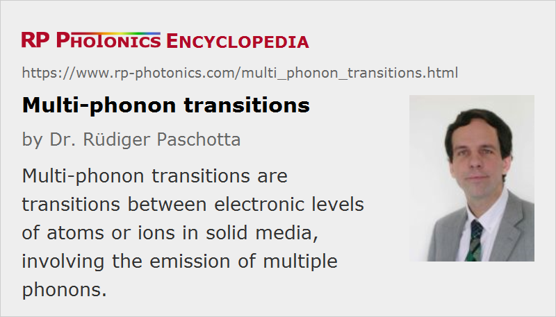

Multi-phonon Transitions
Definition: transitions between electronic levels of atoms or ions in solid media, involving the emission of multiple phonons
German: Multiphononen-Übergänge
Category: physical foundations
How to cite the article; suggest additional literature
Author: Dr. Rüdiger Paschotta
The upper-state lifetime in a solid-state gain medium, or more generally the lifetime of a metastable electronic state of a dopant ion in such a medium, can be strongly reduced by decay processes which involve the simultaneous emission of several phonons. Such a process is called a multi-phonon transition, multiphonon relaxation or multiphonon quenching. Multiple phonons are typically required for such transitions because the energy of a single phonon is not sufficient to match the difference in level energies.
The rate of multi-phonon transitions decreases exponentially with increasing number of phonons required. As a consequence, a certain metastable state may exhibit a very strong reduction in its lifetime by multi-phonon emission if the host medium supports phonons with relatively high energy, whereas the same process may be negligible for a host medium with lower phonon energies. For that reason, many upconversion lasers work only with gain media which have small phonon energies, such as heavy metal glasses, so that sufficient lifetimes of certain energy levels are achieved. In other cases, however, high enough phonon energies are important if these are required for facilitating certain non-radiative transitions, which are needed e.g. to populate the upper laser level or to depopulate the lower laser level.
Multiphonon emission can already occur at low temperatures, where phonon modes of the material are hardly populated. However, the multi-phonon transition rate can increase with temperature due to stimulated emission of phonons, involving thermally populated phonon modes [1]. This happens when kBT is not much smaller than the energy of the involved phonons. As a consequence, metastable level lifetimes can be reduced at increasing temperatures.
Some examples of the importance of multi-phonon processes in laser gain media are:
- In neodymium-doped gain media, one typically pumps ions from their ground state to an excited state above the upper laser level. From there, multi-phonon transitions take them to the upper laser level (4F3/2). Also, the lower laser level of most four-level solid-state gain media is rapidly depopulated by multiphonon emission. Both multiphonon processes are beneficial for laser operation.
- Upconversion lasers based on erbium-doped or thulium-doped glass require heavy metal glasses (e.g. fluoride glasses) as host media, since high phonon energy glasses such as silica would lead to too low lifetimes of required metastable levels (multi-phonon quenching). In such cases, multiphonon effects can severely decrease the efficiency of a laser or even totally prevents its operation.
- The same holds for many mid-infrared lasers, e.g. 3-μm erbium-doped fiber lasers. Mid-infrared wavelengths require a small energy gap between upper and lower laser level, and sufficient upper-state lifetimes can be achieved only with low phonon energy materials, because otherwise the laser transition is bypassed by multi-phonon emission. Low phonon energies are also important for transparency in the mid-infrared wavelength region.
Questions and Comments from Users
Here you can submit questions and comments. As far as they get accepted by the author, they will appear above this paragraph together with the author’s answer. The author will decide on acceptance based on certain criteria. Essentially, the issue must be of sufficiently broad interest.
Please do not enter personal data here; we would otherwise delete it soon. (See also our privacy declaration.) If you wish to receive personal feedback or consultancy from the author, please contact him e.g. via e-mail.
By submitting the information, you give your consent to the potential publication of your inputs on our website according to our rules. (If you later retract your consent, we will delete those inputs.) As your inputs are first reviewed by the author, they may be published with some delay.
Bibliography
| [1] | L. A. Riseberg and H. W. Moos, “Multiphonon orbit–lattice relaxation of excited states of rare earth ions in crystals”, Phys. Rev. 174 (2), 429 (1968), doi:10.1103/PhysRev.174.429 |
| [2] | C. B. Layne et al., “Multiphonon relaxation of rare earth ions in oxide glasses”, Phys. Rev. B 16 (1), 10 (1977), doi:10.1103/PhysRevB.16.10 |
| [3] | Y. V. Orlovskii et al., “Multiple-phonon nonradiative relaxation: experimental rates in fluoride crystals doped with Er”, Phys. Rev. B 49 (6), 3821 (1994), doi:10.1103/PhysRevB.49.3821 |
| [4] | Y. V. Orlovskii et al., “Temperature dependencies of excited states lifetimes and relaxation rates of 3–5 phonon (4–6 μm) transitions in the YAG, LuAG and YLF crystals doped with trivalent holmium, thulium, and erbium”, Opt. Materials 18, 355 (2002), doi:10.1016/S0925-3467(01)00174-4 |
| [5] | Z. Burshtein, “Radiative, nonradiative, and mixed-decay transitions of rare-earth ions in dielectric media”, Opt. Eng. 49, 091005 (2010), doi:10.1117/1.3483907 |
See also: gain media, rare-earth-doped gain media, upconversion lasers, fluoride fibers, quenching, non-radiative transitions, multiphonon absorption
and other articles in the category physical foundations
|  |
If you like this page, please share the link with your friends and colleagues, e.g. via social media:
These sharing buttons are implemented in a privacy-friendly way!